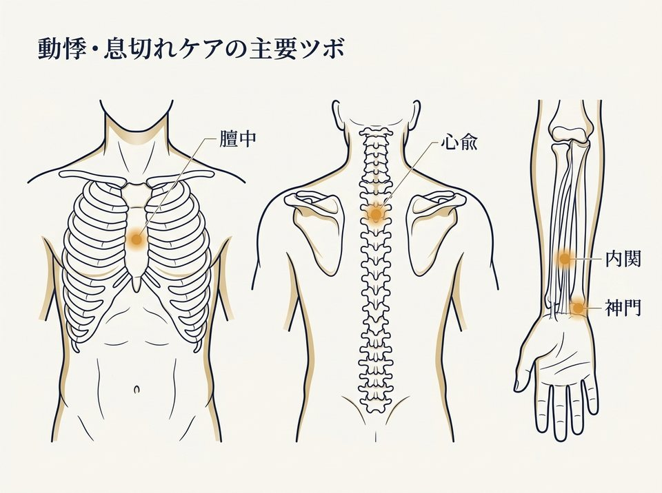

血栓症の鍼灸
血管内に血の塊ができて血流を塞ぐ病気です。急性期は救急・専門治療を最優先し、安定期の予防と体調管理をサポートします。


院長YouTube解説・関連動画
血栓症はいろいろな臓器に障害を引き起こす
血栓症はいろいろな臓器に障害を引き起こします。どのような障害を引き起こすのかについては血栓のできた場所によって異なります。血栓症には2つの種類があります。
1つ目は動脈で起こる動脈血栓症です。動脈血栓症は、脳梗塞や心筋梗塞などの病気を引き起こします。2つ目は、静脈で起こる静脈血栓症です。静脈血栓症は、深部静脈血栓症や肺塞栓症を引き起こします。
下肢の血管に血栓ができた場合は、ふくらはぎや太ももに痛みや腫れ、赤みが起きたり、突っ張りや脚のだるさを感じることが多いです。
血栓症は、血液中の凝固因子や血管内壁の異常により、血液が正常な流れを阻害し、血管内に血栓が形成される病気です。血栓症の症状は、形成された血栓の場所や大きさによって異なります。以下に、血栓症の一般的な症状とその詳細な解説を紹介します。
深部静脈血栓症（DVT）の症状:
脚の痛みと腫れ: DVTは通常、下肢の深部静脈（主にふくらはぎや太もも）に血栓が形成される状態です。このため、感じる痛みや不快感があり、脚が腫れることがあります。
ふくらはぎの熱感: 血栓が形成されると、ふくらはぎの部位が触れたり圧迫されることで熱感を感じることがあります。
色素沈着や皮膚の光沢: DVTによる血流障害や炎症反応により、脚の色素沈着や皮膚の光沢が生じることがあります。
肺血栓塞栓症（PE）の症状:
突然の呼吸困難: PEは肺動脈やその枝に血栓が詰まる状態であり、突然の呼吸困難が特徴的な症状です。患者は息切れや胸部の圧迫感を感じることがあります。
胸部痛: PEによる血流障害や肺動脈の圧力上昇により、胸部に鋭い痛みや圧迫感が生じることがあります。痛みは通常、深呼吸や咳嗽時に悪化します。
咳や喀血: PEによる肺血管の破壊や炎症反応により、咳や喀血（血痰）が生じることがあります。
脳血栓症（Cerebral Thrombosis）の症状:
急性の頭痛: 脳血栓症による血流障害や脳内の圧力上昇により、急激な頭痛が生じることがあります。痛みはしばしば突然発生し、激しい性質を持ちます。
突然の片麻痺または麻痺: 脳血栓により、血液の供給が阻害された脳の特定の領域に酸素や栄養素が不足し、麻痺が生じることがあります。麻痺は通常、一側の身体の一部（手、腕、足など）に現れます。
言語障害: 脳血栓が脳の言語センターに影響を与えると、言語の理解や表現に問題が生じることがあります。言葉の意味を理解できなかったり自分の思考を適切に伝えることができなかったりします。
顔の片側の麻痺またはしびれ: 脳血栓が脳の運動センターに影響を与えると、顔の片側に麻痺やしびれが生じることがあります。顔の筋肉が動かない、または感覚が鈍くなることがあります。
これらは一般的な血栓症の症状の一部ですが、症状は個人によって異なる場合があります。また、血栓症の症状は他の病気と類似していることもあります。
引用元:
Hunt BJ. "Bleeding and Thrombosis in Critical Care." N Engl J Med. 2014;370(9):847-859.
Sacco RL, et al. "Cryptogenic Stroke." N Engl J Med. 2014;370(26):2478-2486.
Powers WJ, et al. "2018 Guidelines for the Early Management of Patients with Acute Ischemic Stroke: A Guideline for Healthcare Professionals from the American Heart Association/American Stroke Association." Stroke. 2018;49(3):e46-e110.
血栓症の改善方法は、薬です。薬によって血栓を溶かし、血栓ができないようにすることで改善を行うのです。血栓を溶かすためには血栓溶解薬、血液を固まりにくくするためには抗凝固薬を使います。
薬を使うことで血液はサラサラになります。そのため、生活をしていて出血してしまった時には出血しすぎないように注意が必要です。薬で改善を行なっても血栓を溶かすことができない時には手術を行うこともあります。
血栓ができていることがわかったら他の臓器に移動しないようにすることが非常に大切です。そのため、できるだけ早く病院で改善を行いましょう。
血栓症は、血液中の凝固因子や血管内壁の異常により血栓が形成される病気であり、改善は、早期の判断と適切な管理が重要です。
抗凝固法:
血液凝固を抑制し、新たな血栓の形成や既存の血栓の拡大を防ぐために使用されます。主な抗凝固薬としては、ワルファリン、ヘパリン、直接経口抗凝固薬（DOACs）があります。これらの薬物は、凝固因子の活性化や凝固過程の阻害により、血栓の形成を防止します。
血栓溶解:
既存の血栓を溶解するために使用されます。主な血栓溶解薬は組織プラスミノーゲン活性化因子（tPA）です。tPAは血栓内の線維素を分解し、血栓を解消する作用を持ちます。血栓溶解療法は特定の状況で使用されることがあり、脳卒中や肺血栓塞栓症などの重篤な血栓症に対して有効です。
血栓除去:
血栓除去法は、血栓を物理的に除去するために使用されます。主な方法としては、血栓摘出術やカテーテルによる血栓除去があります。これらの手法は、血管内に挿入されたデバイスを使用して血栓を取り除くことで、血液の正常な流れを回復させます。
外科的処置:
重篤な血栓症の場合、外科的処置が必要な場合があります。例えば、深部静脈血栓症（DVT）の場合、血栓を取り除く手術や血栓をバイパスする手術（静脈フィルター挿入など）が行われることがあります。
予防措置:
血栓症の予防は、再発や合併症のリスクを低減するために重要です。以下に、血栓症の予防策について詳しく解説します。
抗凝固法: 高リスクの場合や手術後には、抗凝固法が予防的に行われることがあります。これには、ワルファリンやヘパリンなどの薬物が使用されます。また、直接経口抗凝固薬（DOACs）も予防法として選択肢となります。
圧迫ストッキング: 圧迫ストッキングは、下肢の血流を改善し、深部静脈血栓症（DVT）のリスクを低減するために使用されます。これは、長時間の静座や安静状態での血液の滞留を防ぐために重要です。
運動と活動の促進: 長時間の静座や安静状態は血液の循環を悪化させることがあります。適度な運動や活動を行うことで、血液の循環が改善し、血栓症のリスクを低減することができます。
リスク要因の管理: 血栓症のリスク要因を持つ場合には、それぞれのリスク要因を管理することが重要です。例えば、喫煙や肥満の改善、高血圧や糖尿病の適切な管理、遺伝的要因への適切な対策などが含まれます。
抗血栓薬の適切な使用: 血栓症のリスクが高い場合は、抗血栓薬の使用が推奨される場合があります。これは、血栓症の再発リスクを低減するために重要です。
血栓症の予防策は、個々の状態やリスク要因に基づいてカスタマイズされる必要があります。
引用元:
Kearon C, et al. "Antithrombotic Therapy for VTE Disease: CHEST Guideline and Expert Panel Report." Chest. 2016;149(2):315-352.
Konstantinides SV, et al. "2019 ESC Guidelines for the Diagnosis and Management of Acute Pulmonary Embolism Developed in Collaboration with the European Respiratory Society (ERS)." Eur Heart J. 2020;41(4):543-603.
January CT, et al. "2019 AHA/ACC/HRS Focused Update of the 2014 AHA/ACC/HRS Guideline for the Management of Patients with Atrial Fibrillation." Circulation. 2019;140(2):e125-e151.
Spyropoulos AC, et al. "Prevention of Venous Thromboembolism in Hospitalized Patients with COVID-19 and COVID-19 Vaccination." Thromb Haemost. 2021;121(4):369-380.
血栓症は日常生活を送る上で誰にでも起こることがある病気です。血栓を作りにくくして血栓症の予防を行いましょう。
血栓を作りにくくするために1番大切なことは下肢を積極的に動かすことです。下肢を動かすことで血液の停滞を防ぐのです。デスクワークや長い時間の移動などをする時には、足首を動かしたり下肢のマッサージをしたりすることをお勧めします。
こまめに水分を摂ることや糖尿病や高脂血症などの生活習慣病がある場合は病気の改善を行う中で食生活の改善や適度な運動などを行い血栓症の予防を行うことも大切です。
中見出し
血栓症は個々の状態や病態に基づいて行われるため、専門家の指導と適切な評価が不可欠です。以下に、血栓症の実際の改善の例を紹介します。
例1: 深部静脈血栓症（DVT）55歳の男性
長時間の飛行機移動後、右下肢の痛みと腫れが現れた。調べた結果、右下肢のふくらはぎの深部静脈に血栓が形成されていることが確認された。
抗凝固法が開始され、ヘパリンという注射薬が使用された。これにより血栓の進行を防ぎ、体内での凝固を抑制する。凝固因子の働きを遅くし、血栓の再発を防ぐ効果があるワルファリンという抗凝固薬が処方され、数か月間服用した。
圧迫ストッキングの使用: 下肢の血流改善とDVTの再発予防のために、圧迫ストッキングの着用が推奨された。
フォローアップ:
改善の効果と副作用の監視のため、定期的に医師に見てもらい血液を調べた。
例2: 肺血栓塞栓症（PE）65歳の女性
突然の呼吸困難と胸部痛が現れ、喀血も起こっている。
肺血栓塞栓症の疑いがあり、調べた結果、肺動脈に血栓が詰まっていることが確認された。
肺血栓塞栓症は重篤な合併症を引き起こす可能性があるため、緊急の改善が必要です。ヘパリンという抗凝固薬が静脈内投与され、血栓の進行を防ぎ、体内での凝固を抑制し、組織プラスミノーゲン活性化因子（tPA）が使われました。tPAは血栓を溶解するための薬物です。酸素濃度を高めて呼吸困難を軽減します。
-フォローアップ:
改善後の経過観察と合併症の監視のために、定期的に医師に見てもらい、血液を調べた。
例3: 心房細動に伴う血栓症 70歳の男性
心房細動があり、抗凝固法を受けているが、血栓塞栓症の症状が現れた。
血栓塞栓症の疑いがあり、肺CTスキャンにより肺血栓が確認された。
ワルファリンの投与量が調整され、抗凝固効果が増強されました。INR（International Normalized Ratio）のモニタリングが行われ、目標の範囲に達するように調整されます。心房細動の制御が目標とされ、適切な抗不整脈薬やリズムコントロールが行われた。
フォローアップ:
改善の効果と副作用のモニタリングのため、定期的に医師に見てもらいと血液を調べた。必要に合わせてプランの変更を行なった。
これらは血栓症の改善の例の一部であり、個別の状況や病態に基づいて改善法は決定されます。
▼ 詳しく知りたい項目だけタップして開けます（全項目の医学解説を収録）
01. 原因とメカニズム
なぜ症状が起きるのか・鍼灸の作用機序を読む
▼
01. 原因とメカニズム
なぜ症状が起きるのか・鍼灸の作用機序を読む
血液の流れの停滞、血管内壁の傷、血液が固まりやすい体質や生活習慣病などが重なり、血管の中に血栓（血の塊）ができる病気です。血栓がその場で血管を塞いで末梢の循環不全を起こすほか、血流に乗って肺や脳など別の臓器へ移動して肺塞栓症や脳梗塞を引き起こすことがあります。急な息切れや胸痛、片側の麻痺やしびれ、片脚の強い腫れがある場合は直ちに救急受診が必要です。
なぜ鍼灸で改善へ向かうのか？（作用機序の図解）
血栓症に対する鍼灸は、心拍変動・血管トーンを整える自律神経サポート機序を通じて、お体本来の回復力を引き出します。
循環器専門医の標準治療を絶対前提とし、手首や背部の安全な経穴へ低刺激でアプローチします。
心臓への過剰な交感神経刺激を穏やかに鎮め、心拍リズムと血管緊張の急変を抑えます。
ストレスで固まりやすい胸郭や横隔膜の緊張を解き、酸素摂取とリラックス反応を促します。
内服管理を厳守しながら、疲労やストレスが引き金となる症状不安の軽減を支えます。
02. よくあるお悩み
このような症状はありませんか？（4項目）
▼
02. よくあるお悩み
このような症状はありませんか？（4項目）
- ✓片側の脚の急な腫れや痛み、張りがある
- ✓長時間のデスクワークや移動で下肢がむくみやすい
- ✓息切れや胸の痛み、手足のしびれ・麻痺がないか不安である
- ✓医師の指導下で再発予防の生活習慣や血流ケアを整えたい
03. 当院の施術アプローチ
施術の進め方・改善のポイントを見る
▼
03. 当院の施術アプローチ
施術の進め方・改善のポイントを見る
04. ツボ詳細・セルフケア一覧
循環器・動悸・高血圧・心不全補助の全身ツボ図解（6穴）
▼
04. ツボ詳細・セルフケア一覧
循環器・動悸・高血圧・心不全補助の全身ツボ図解（6穴）
実際の施術ではお一人おひとりの体質・症状に合わせて選穴しますが、動悸・不整脈・本態性高血圧・慢性心不全の循環器治療併用サポートの臨床でよく用いられる代表的なツボの目安です。
| ツボ名 | 位置の目安 | 主な狙い | セルフケアの注意点 |
|---|---|---|---|
| 内関（ないかん） | 手首の横ジワから指3本分肘寄りの中央 | 動悸・不整脈・狭心症補助で最も研究されている心包経の要穴 | 胸痛・冷や汗・失神がある場合は直ちに救急受診してください。 |
| 膻中（だんちゅう） | 胸の中央（胸骨上） | 胸のつかえ・交感神経の高ぶり・不安感の鎮静 | 強く押さず手のひらで温めながら深呼吸します。 |
| 神門（しんもん） | 手首の横ジワの小指側のくぼみ | 心拍の落ち着き・緊張性の動悸と不眠ケア | ペースメーカー使用時は電気鍼を避け手技のみで行います。 |
| 曲池（きょくち） | 肘を曲げた外側のシワの先端 | 血圧変動に伴う上肢・頭部の緊張緩和 | 降圧薬・心不全薬の自己判断での中止は厳禁です。 |
| 足三里（あしさんり） | 膝の下外側、指4本分下 | 末梢循環・自律神経バランスとQOL維持 | 身体負担の少ない穏やかな低刺激で行います。 |
| 太衝（たいしょう） | 足の甲、親指と人差し指の骨の間 | ストレス性の血圧上昇・末梢血管収縮の緩和 | 就寝前の優しい指圧でリラックスを促します。 |
05. 医学的根拠・国際査読論文（PubMed / Cochrane）
科学的エビデンス・出典リンク一覧（4件）
▼
05. 医学的根拠・国際査読論文（PubMed / Cochrane）
科学的エビデンス・出典リンク一覧（4件）
国際的な医学データベース（PubMed・Cochrane等）で報告されている動悸・不整脈・本態性高血圧・慢性心不全の循環器治療併用サポート領域の代表的な査読済み鍼灸研究をまとめています（標準治療との併用や研究上の限界を含めて正確に掲載）。
| 年・研究デザイン | 対象・規模 | 主な結果 | 限界・出典 |
|---|---|---|---|
| 2019年 大規模多施設RCT | 慢性安定狭心症 398名解析（標準薬物療法併用） | 16週時点の4週間発作減少は実鍼群がシャム群比5.18回・待機群比5.63回多く有意改善（P<0.001）。 | 標準薬物療法への併用（補完）試験であり単独療法ではない。 JAMA Intern Med (PMID: 31355870) |
| 2007年 シャム対照RCT | 本態性高血圧 140名完了（ドイツ・24時間ABPM） | 治療終了時の24時間血圧はシャム比SBP -6.4mmHg・DBP -3.7mmHg有意低下（P<0.001）。 | 終了3〜6か月で治療前水準へ戻るため継続ケアが必要。 Circulation (PMID: 17548730) |
| 2015年 メタ解析 | 高血圧 23 RCTs（n=1,788） | 降圧薬＋実鍼は降圧薬＋シャム比でSBP -7.47mmHg・DBP -4.22mmHg有意低下。鍼単独は降圧薬と同等・根拠不十分。 | 盲検化・異質性に課題。降圧薬の自己中断は厳禁。 PLoS One (PMID: 26207806) |
| 2025年 メタ解析 | 心拍変動（HRV）10 RCTs（n=744） | 自律神経全体の適応指標SDNNを有意に改善、重篤な有害事象なし。 | LF・HFには不確実性が高くさらなる検証が必要。 Front Neurosci (PMID: 41230507) |
参考文献・出典
- 2019年 大規模多施設RCT（慢性安定狭心症 398名解析（標準薬物療法併用））— JAMA Intern Med (PMID: 31355870)
- 2007年 シャム対照RCT（本態性高血圧 140名完了（ドイツ・24時間ABPM））— Circulation (PMID: 17548730)
- 2015年 メタ解析（高血圧 23 RCTs（n=1,788））— PLoS One (PMID: 26207806)
- 2025年 メタ解析（心拍変動（HRV）10 RCTs（n=744））— Front Neurosci (PMID: 41230507)
06. よくある質問（FAQ）
よくあるご質問を見る（2件）
▼
06. よくある質問（FAQ）
よくあるご質問を見る（2件）
Q. 血栓症の既往や抗凝固薬の服用中でも鍼灸を受けられますか？
急性期や血栓が残存して不安定な時期は施術できません。状態が安定し主治医の許可がある場合は、内出血を防ぐため極細の鍼によるごく弱い刺激や温灸など、安全な方法を選んで対応します。
Q. 血栓を作りにくくするために日常でできることはありますか？
長時間のデスクワークや移動時はこまめに足首を動かして下肢の血液停滞を防ぐこと、意識的に水分を摂ることが大切です。ただし、片脚の急な腫れや痛みがあるときは揉まずに速やかに医療機関を受診してください。
あわせて読まれる関連疾患（循環器のお悩み）
感染症や悪性腫瘍等を契機に全身の細血管で血栓と出血が同時進行する重篤な合併症です。入院治療が絶対最優先で、発症中・凝固異常時は鍼灸厳禁です。
静脈の血栓が心臓の右左シャントを通って脳血管を塞ぐ脳梗塞です。急性期は救急対応を最優先し、安定期の回復・予防を支えます。
脚などの深部静脈に血栓ができ、肺へ飛ぶと肺塞栓症を招く危険な病気です。血栓期の下肢マッサージや局所鍼灸は絶対禁忌で、医療管理が最優先です。
首の骨の中を通る椎骨動脈の内膜が裂ける重篤な血管疾患です。突然の頭痛は即救急受診が必須で、首への施術や操作は絶対禁忌です。
夜間や安静時に心室細動を起こし得る遺伝性不整脈疾患です。循環器専門医での厳重な管理を最優先に、安定期のストレス管理を支援します。
おへそが飛び出し腸管などが脱出する状態です。激しい痛みや戻らない膨らみは緊急受診が必須、安定期の腹圧対策等を補完支援します。
CLINICAL RECOVERY CASES
✨ 実際の臨床改善事例・回復経過を見る
銀座本院をはじめ各院での実際の改善事例を症状別に絞り込んでご確認いただけます。
おひとりで悩まず、まずはご相談ください
銀座本院・川口・大宮・横浜・博多・田無の各院でご予約を承っております。